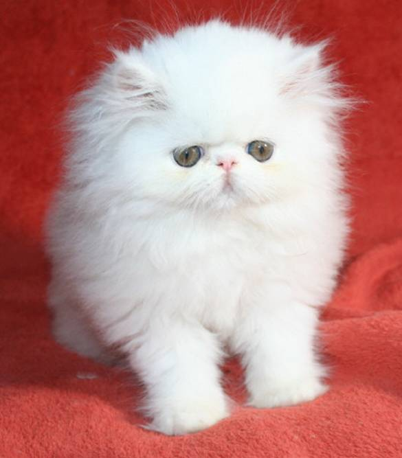
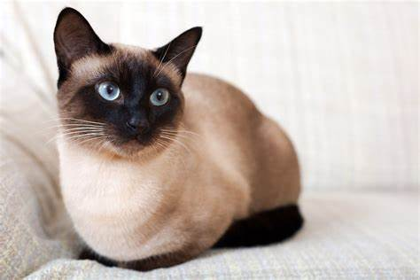
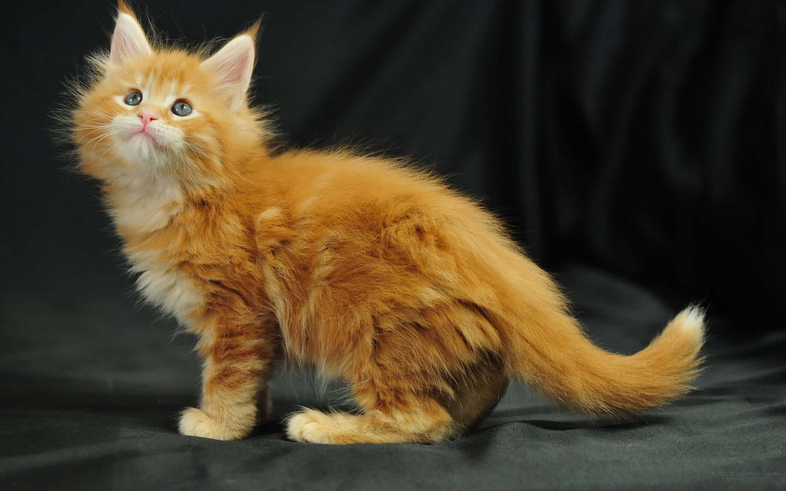

Kot Perski
Rasa Perski charakteryzuje się swoim długim, puszystym futrem, szerokim pyskiem i dużymi, okrągłymi oczami. Koty te mają również krótkie, masywne nogi i szeroką klatkę piersiową. Wyróżnia się kilka odmian rasy kota Perski, które różnią się między sobą kolorem futra oraz nieco budową ciała.
Kot Syjamski
Cechą charakterystyczną są plamy, które pokrywają maskę, uszy, łapy i ogon. Posiada duże, niebieskie oczy. Jest to kot szczupły, o wydłużonej sylwetce i muskularnej budowie.
Kot Maine Coon
Charakteryzują je długie futro, krępe ciało oraz charakterystyczne, piękne rozbudowane uszy.
